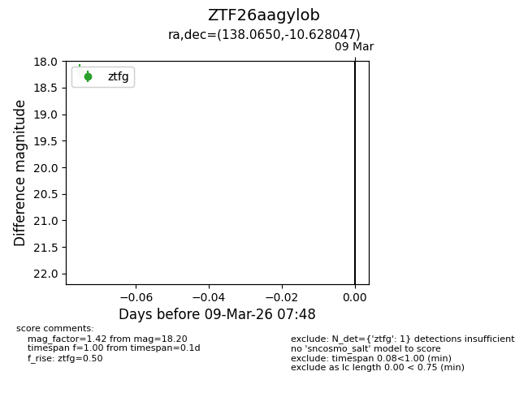
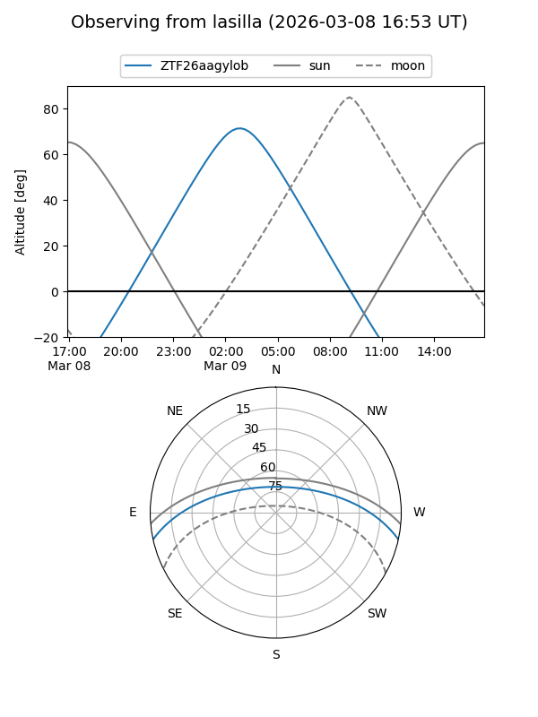
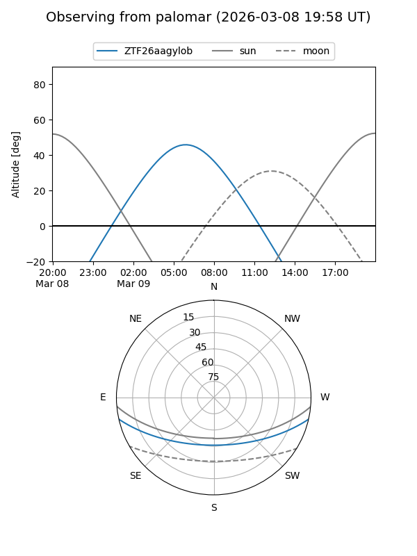

ZTF26aagylob
Target ZTF26aagylob at 2026-03-09 07:49
Aliases and brokers:
FINK: link
Lasair: link
ALeRCE: link
alt names
ZTF26aagylob (ztf,fink_ztf)
Coordinates:
equatorial (ra, dec) = 138.0650,-10.62805
equatorial (HMS+DMS) = 09:12:15.59,-10:37:40.97
galactic (l, b) = (240.6817,+24.84643)
Flags:
Photometry:
last ztfg=18.20
1 ztfg detections
Lightcurve

Visibility


Additional plots